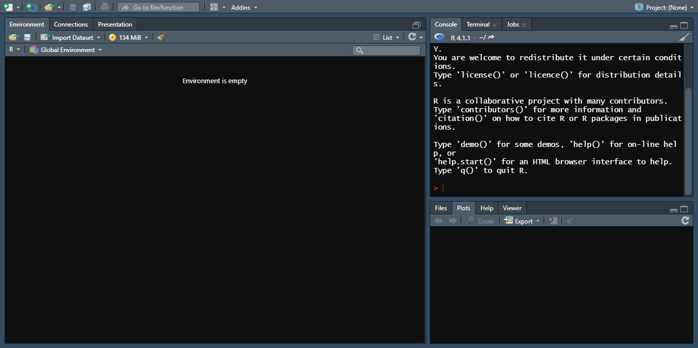
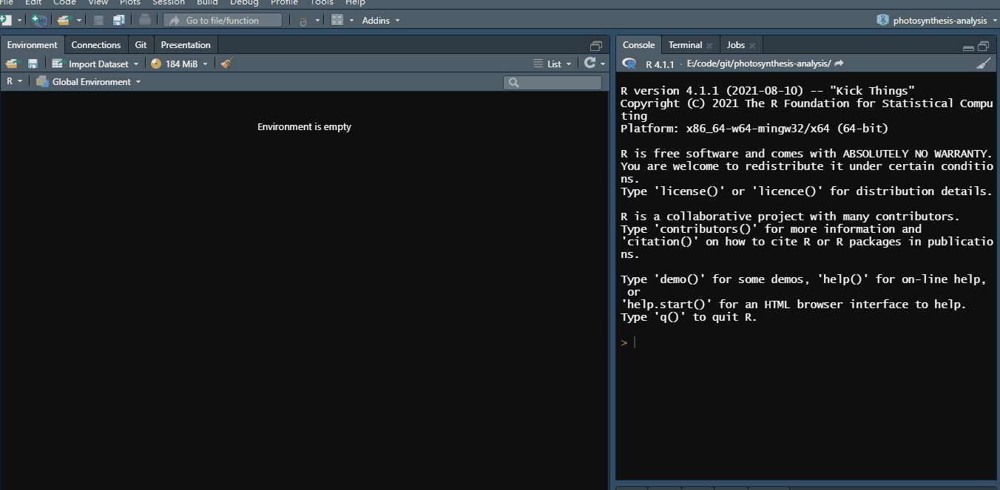
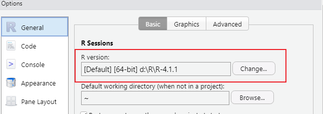
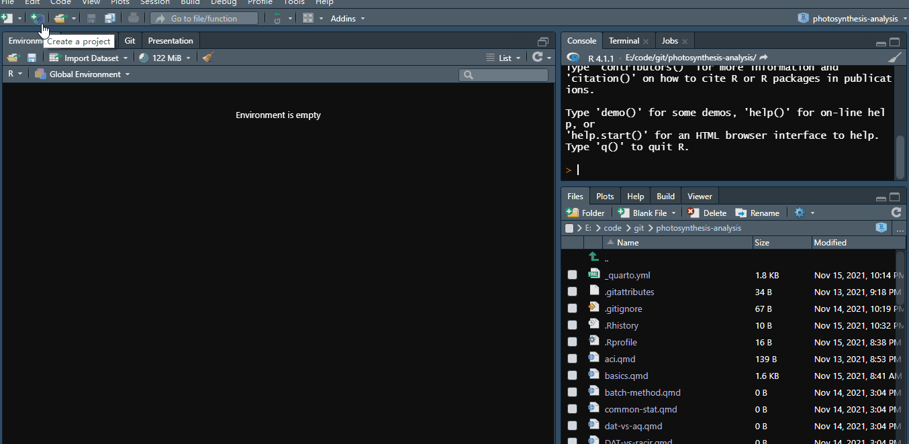
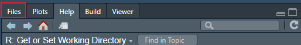
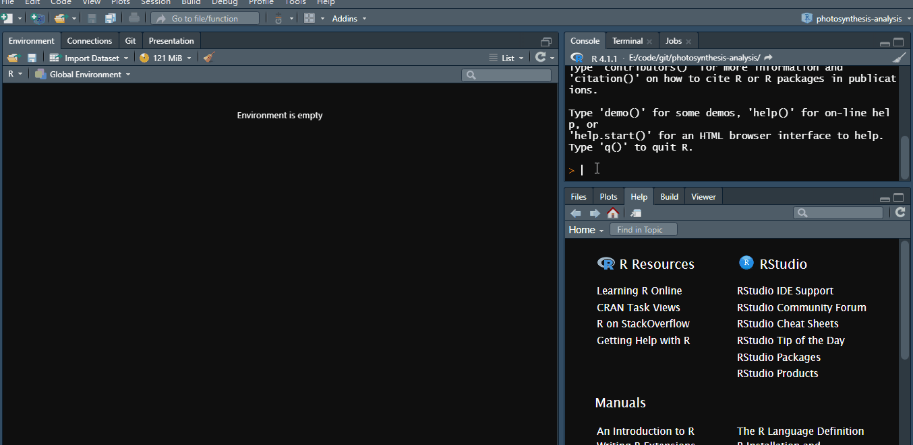

Code
read.csv("data/acitest.csv")R 自诞生以来就是为统计而生的，而它的语法又相对而言比较简单易上手，而且它是 GNU 项目的一部分，开源和免费。 对于多数没有计算机相关背景的生态学领域的研究者来讲，这有足够的吸引力。不但如此，它有完善的相对易用的软件包制作的一系列的工具，这就使得在 R 基础功能之上进行功能的扩展十分方便，也就是有完善的生态系统，多数分析工作都有已有的工具包来简化工作流程，非常方便。据我的了解，部分学校的生态学相关专业里已经开设了 R 相关课程，这也对其使用来讲是个好消息，因为自学有时候很简单的一点问题，要找答案也是非常磨人的，这是来自一个过来人的经验，但好处可能就是记忆会比较深刻。
R 的安装主要是需要有一下几点需要注意：
首先不要着急下载，要先选择一个国内镜像，简单来说，默认的软件存放地址在国外的服务器上，那样下载会比较慢，所以我们先找一个国内的服务。从上面链接的镜像网址中的 China 列表内，找到距离所在地最近的服务器，例如北方东部地区，清华 的开源镜像服务一般是一个比较好的选择。这样在网速一般的情况下，我们相对快速的完成几十兆文件的下载。
下载哪个文件的问题。按照上面的方式进入镜像后，会在最上方看到下载系统相关软件的链接，可能多数人都是使用 Windows。直接点开后又面临了好多个下载的选择，如果你对他这几个选择毫无概念，那么不要犹豫，base 就是你最好的选择。
安装过程本身很普通，但是为避免一些莫名其妙的问题，我建议安装路径需要满足两点：路径最好是英文字符；路径中不要带空格，多数情况下不按照这两点做是不影响使用的，但是少数情况下莫名其妙的报错很有可能来源于不按照这两点来操作。
做好上面几点，应该不至于再出一些与安装相关的问题。安装好后我们多数时间是无需再打开 R 来操作了。所以这里我压根不准备给它留一张放图的空间，偶尔有需要在这里升级软件包或 R 的操作，也是几行代码的问题，实在没必要了解太多。
在 R 下载页面，有一个 Rtools 下载页面。这个工具在某些情况下是需要的。它本身的用途异常单一，用于编译 C/C++/Fortran 代码用的。但这并不意味着我们不需要，哪怕我们没有写自己的软件包的需求，在有些情况下，有些软件包是需要从源代码进行编译的，所以为避免以后出问题了不知道原因，不如直接装上，不知道什么原因软件包就工作了好。它的安装只有一个注意事项: 不要更改安装路径！不要更改安装路径！！不要更改安装路径！！！
R 虽好，原生的 GUI 着实简陋了一些。因此，用户对使用一个方便的编辑器的追求从未停止过。在我的印象里，最初我用 notepad++ 和 gedit，这个相对简单易操作一些。大神们喜欢使用 vim 或 emacs（印象里谢益辉有一次报告还介绍了使用 emacs 来写代码），功能确实强大，但不论编辑器之神还是神之编辑器，入门门槛着实高了一些。直到 Rstudio 的横空出世，彻底解决了平凡人等写代码没有顺手工具的难题，这里用了这么多话来引出 Rstudio，着实是用户的生产力得到了极大的解放。本节的大部分笔墨将介绍它最基本的使用。
安装也没太多可以介绍的，但我还是建议和 R 一样，安装路径最好是没有空格的英文。安装好后直接打开，就能看到一个界面 ：

我修改了默认主题，因为我喜欢黑色背景，感觉注意力很容易被吸引到屏幕上，而且不刺眼。这个开始屏幕是什么也做不了的，我们至少需要打开或新建一个脚本文件来写代码：

R 的代码文件称为脚本（script），这里我们新建一个脚本文件用于我们写代码，我们看到在打字的过程中，响应的函数会有提示，这样有些比较长的名字或变量，其实我们不用输完，即使记不清楚函数的名字，也可以尝试在这里输入，那么说不定我们看到 Rstudio 给的提示就记起来了，如果要运行当前行或者选中行的代码，有一个快捷键为 Ctr+Enter，我这里就是这么做的，运行完成后。我们会在 plot 那个窗口看到图形，而 plot 的出现也使得 Console 窗口缩小，实际上 Console 就是 Rstudio 调用 R 的窗口。这里需要在下面的菜单里设定：
Tools –> Global Options… –> General –> R version:
例如我的设置为：

这里主要为说明另一个问题，正常我们安装的顺序为先安装 R，再安装 Rstudio，一般这里不会出现找不到 R 之类的报错提示，但是我还是遇到过有人反馈这个问题，如果出现了这种情况，就看一下这个位置是不是安装 R 的路径没有找到，只要你按照上面讲的方式安装了，那么即使遇到这种问题了，也可以手动在这里指定安装路径。
正常我们新建完成之后是保存这个脚本文件的，R 的脚本文件就是以 .R 结尾的，我们可以直接利用快捷键 CTR+S 保存，这是我们所熟悉的操作，就不浪费时间解释和演示了。
即使是日常练习，我们一般也不会随便创建一个文件，通常会把相关数据和脚本文件放在一个文件夹内，这是避免自己电脑太乱的好方法，但是对 Rstudio 来讲，这并不是最佳方案，因为一旦我们文件夹路径稍微复杂一些，那么使用起来并不方便。使用 setwd 固然可以设置当前路径，但终归不是很方便，Rstudio 给出了新的方案，创建新的项目来解决这个问题：

新建项目有三个选项，如果是刚入门的话，通常只会用到前面两个，例如上面我们选择第一项的目的是在选中的路径下，创建一个 test 文件夹，点击 Create Project 后就会完成相关创建，在这个文件夹内就会生成一个 test.Rproj 文件，我们每次要在这个目录内工作，双击打开这个文件即可，那时候的目录就可以使用相对路径的方式，相对路径的含义我解释一下：
例如我上面创建的路径是 D:/test，数据里有一个文件夹是 data，存放了一个数据文件叫做 aci-test.csv，即数据文件的路径为：D:/test/data/aci-test.csv，那么我要读取他通过相对路径的方式为：
read.csv("data/acitest.csv")而绝对路径则麻烦一些：
read.csv("D:/test/data/aci-test.csv")而且如果我们的目录下有多个代码文件，我们完全可以通过另一个窗口来查看并直接打开，根本无需进入文件夹操作：

脚本文件里的代码提示：我们每次输入相关代码，例如函数名字，变量名字，Rstudio 会自动弹出提示，这就是所谓的代码补全，我们看到下面一长串字符的时候，其实不用着急用方向键来选择，我们继续输入字母就好了，例如我们要输入 plot.funcition 之后与其输入完 plot. 之后按方向键在那一长串函数下选择，不如继续输入 plot.f，这样子我们需要的 plot.function 就自动跑到第一个候选项来了，这时候只要按 Tab 或 Enter 那么自动输入的字符为 plot.function()，连括号都给写了。
友好一点的帮助文档查看方式，Rstudio 好是好，但有些窗口对于笔记本电脑着实小了一些，例如查看帮助文档，笔记本都要看不清楚了，那么可以这么操作:

<- 可以通过 Alt + - 来快速输入。
Ctr + Enter 来运行当前行或选中行的代码。
Ctr + A + Enter 来运行所有代码。
Ctr + Shift + F10 来重启 R，这对于程序运行错乱时非常有用，跟安装软件出现莫名其妙不起作用的时候重启电脑一样好用。
Ctr + Shift + C 来批量注释或者去掉注释代码。